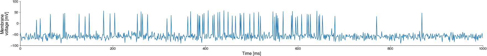

The memory of your notebook (a.k.a namespace)#
Why does the code below produce an error?
my_variable
---------------------------------------------------------------------------
NameError Traceback (most recent call last)
Cell In[2], line 1
----> 1 my_variable
NameError: name 'my_variable' is not defined
Why does that code work?
my_variable = 10
my_variable
10
Now go back and run the first cell containing only (my_variable).
Why is the result different from the first time you ran it?
Updating variables#
Since the notebook remembers all commands you ran since the notebook was started, you can update variables across different cells. The fact that we can re-use variables across cells allows us to successively build up our analysis code, cell by cell.
a = 10
b = a + 2
# What's the value of b?
b = b + 100
# What's the value of b now?
# What is the value of b when I run this cell a second time?
Keeping track of variables and their values#
It can be hard to keep track of the notebooks memory after a while.
To help, you can list the contents of your namespace with %whos:
%whos
Variable Type Data/Info
----------------------------
a int 60
The “memory” of the notebook is also called namespace. It contains all variables and code that you have executed since starting the notebook.
To wipe the memory, you can restart the notebook (technically, the kernel that runs your notebooks in the background). This will erase any variables and code stored in memory and you start from scratch, with a clean namespace.
Re-using and updating variables across cells#
Not that the order of execution matters, not the order in which cells appear in the notebook!
Alice and Bob count mosquitoes. Alice, to store her count, creates a variable with name n_alice_mosquitoes and value 1 (she has counted only one mosquito so far).
n_alice_mosquitoes = 1
%whos
Variable Type Data/Info
--------------------------------------
a int 60
n_alice_mosquitoes int 1
Clicker question “mosquitoes 1” (Click me!)
What will be the value of n_mosquitoes after running the cell above?
n_mosquitoes = n_alice_mosquitoes + 10
What is going on here?
In the above expression, n_alice_mosquitoes + 10, python sees the variable name, n_alice_mosquitoes, and looks up it’s value, 1 This works since we have created and assigned a value to n_alice_mosquitoes in the previous cell.
Python then replaces the name n_alice_mosquitoes with the value 1 and performs the computation (it evaluates the expression).
n_alice_mosquitoes + 10 is evaluated as 1 + 10.
n_mosquitoes = n_alice_mosquitoes + 10 means that the result of the operation, the value 11, is saved in a new variable, with name n_mosquitoes.
Note that above we exploited that what you do in one cell transfers to the next:
we defined
n_alice_mosquitoesin one celland used it in a computation in the next cell
Clicker question “mosquitoes 2” (Click me!)
What will be the value of n_mosquitoes after executing this code after having run the first and second cells above?
n_mosquitoes = n_tim_mosquitoes + 20
This will throw an error, as we cannot use a variable we have not defined before: Python does not know what n_tim_mosquitoes refers to!
Messing up and restoring the namespace#
The namespace contains not only all variables you’ve created and manipulated, but also all functions. It is therefore surprisingly easy to mess up you namespace. For instance, you can “overwrite” function names with variables in python.
The function print allows you to print the value of a variable. That way, we can also print intermediate results in a cell, not just the last one:
a = 10
a = a + 20
print(a)
a = a + 30
print(a)
30
60
To illustrate how easy it is to mess up your namespace, let’s create a variable named print and assign a value to it:
print = 'no, never do this!'
print(print)
---------------------------------------------------------------------------
TypeError Traceback (most recent call last)
Cell In[10], line 1
----> 1 print(print)
TypeError: 'str' object is not callable
That fails, as does
print(10)
---------------------------------------------------------------------------
TypeError Traceback (most recent call last)
Cell In[11], line 1
----> 1 print(10)
TypeError: 'str' object is not callable
That’s because in the namespace of the current notebook, we have overwritten the function print with a string variable of the same name.
Why is this happening? Let’s first inspect the namespace. This confirms that print is of type string now, and not a function.
type(print)
str
%whos
Variable Type Data/Info
--------------------------------------
a int 60
n_alice_mosquitoes int 1
print str no, never do this!
Clicker question “namespace”(Click me!)
What do you do now?
After restarting the kernel, we will see that the type of print is now “builtin_function_or_method”:
type(print) # this will return "builtin_function_or_method"
builtin_function_or_method
Clicker question “cdcc” (Click me!)
The code below will print four numbers. Can you predict what will be printed?
c = 1
print(c)
d = c + 5
print(d)
print(c)
c = c + 8
print(c)
Spike detection with python#

Present data in code (individual voltage values, manipulate them and store the results) - variables
Compare variables (voltage to threshold) - boolean values
Perform different actions based on the value of a variable (only keep the position if the voltage exceeds the threshold) - if-else statements
Present and access data in a time series of voltage values - lists
Perform an action for each element in a sequence of values (inspect voltage values one-by-one) - for loops
Separate data and logic so we can use the same code for new recordings - functions
Apply this to multi data files
Plot and save the results